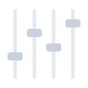

Desconectado
−
×
×
Configurar canal 1
Aplicativos
Áudio do sistema
Ícones
Todos os aplicativos
i
Adicionar aplicativo…
Atualizar
Nenhum ícone escolhido
O mesmo ícone aparece no canal e na OLED.
Remover
Principais
Aplicativos
Áudio
Jogos
Recentes
Todos
Nenhum ícone encontrado. Tente outro nome.
×
Configurações
Dispositivo
Geral
Sobre
Dispositivo:
Nenhum dispositivo
Atualizar
Conectar
Desconectar
Brilho da OLED:
Informações do dispositivo:
Nome:
—
Modelo:
—
Versão do firmware:
—
Conexão:
USB serial
Iniciar com o Windows
Recolher para a bandeja ao fechar
Inverter os controles
Mixer de Áudio
Versão
0.4.1
FECHAR
Dispositivo não conectado